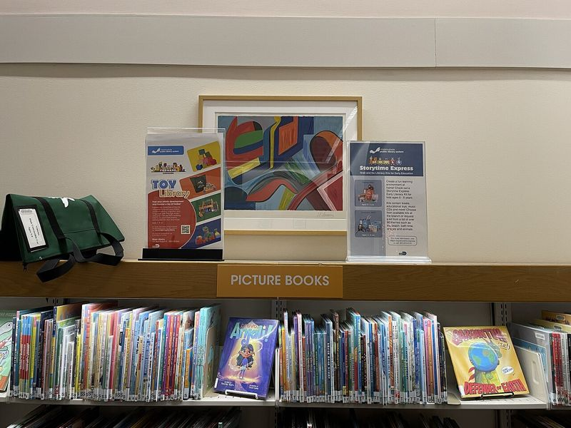
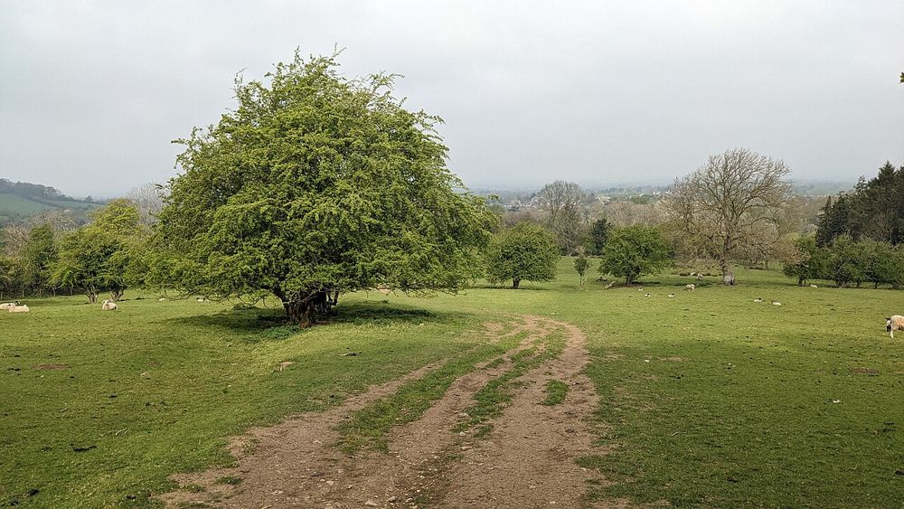

English for French teachers · Day 1
Parler de la langue en anglais
Talking about language in English
Objectif du jour : donner les consignes en classe, nommer les notions de grammaire et expliquer une règle simple en anglais, à Emily comme à Evelyn. Touchez le haut-parleur pour écouter, la tortue 🐢 pour écouter plus lentement, FR pour la traduction française.
Today's goal: give classroom instructions, name grammar notions and explain a simple rule in English, to Emily as well as to Evelyn. Tap the speaker to listen, the turtle 🐢 to listen more slowly, FR for the French translation.
Les consignes en classe5 min
Classroom instructions
Listen and repeat.
Écoute et répète.
Fill in the gaps.
Complète les trous.
Match the words with the pictures.
Associe les mots aux images.
Read the sentence out loud.
Lis la phrase à voix haute.
Have a go!
Essaie !
Très britannique et très encourageant : on invite l'élève à essayer sans peur de se tromper.
Take your time.
Prends ton temps.
Can you say that again, please?
Tu peux répéter, s'il te plaît ?
Let's go over it again.
Revoyons cela encore une fois.
to go over something = revoir, réviser quelque chose.
Spot on!
Exactement ! C'est parfait !
Familier et britannique : la réponse est exactement juste.
Nearly there!
Tu y es presque !
Les mots de la grammaire7 min
Grammar words
Ce sont les mots dont vous aurez besoin pour expliquer n'importe quelle règle. Écoutez-les bien : l'accent tonique change souvent par rapport au français.
These are the words you'll need to explain any rule. Listen carefully: the stress often differs from French.
| Les mots | |
noun | le nom « noun » rime avec « brown ». Attention : « name » = le prénom, le nom de famille. |
verb | le verbe |
adjective | l'adjectif Accent sur la première syllabe : AD-jec-tive. |
adverb | l'adverbe AD-verb. |
pronoun | le pronom PRO-noun. Les pronoms sujets : subject pronouns (je, tu, il…). |
article | l'article the definite article (le, la, les) · the indefinite article (un, une, des). |
subject | le sujet |
| La conjugaison | |
tense | le temps (de conjugaison) Trois mots anglais pour un seul mot français : tense (grammaire), time (l'heure, la durée), weather (la météo). |
to conjugate | conjuguer con-ju-GATE : l'accent est sur la dernière syllabe. |
ending | la terminaison verb endings = les terminaisons des verbes. |
infinitive | l'infinitif in-FI-ni-tive. |
| Le genre, le nombre, l'orthographe | |
gender | le genre masculine · feminine |
singular · plural | singulier · pluriel |
agreement · to agree with | l'accord · s'accorder avec The adjective agrees with the noun. |
a silent letter | une lettre muette |
é · è · ê · ç | accent aigu · grave · circonflexe · cédille acute accent · grave accent · circumflex · cedilla |
Expliquer une règle6 min
Explaining a rule
Voici des phrases modèles à réutiliser telles quelles avec Emily, Penka ou Ezra. Écoutez, répétez à voix haute, puis essayez de les dire sans lire.
Here are model sentences to reuse as they are with Emily, Penka or Ezra. Listen, repeat aloud, then try saying them without reading.
In French, every noun is either masculine or feminine.
En français, chaque nom est soit masculin, soit féminin.
The adjective agrees with the noun.
L'adjectif s'accorde avec le nom.
The final s is silent: you don't pronounce it.
Le s final est muet : on ne le prononce pas.
We use tu with friends and family, and vous to be polite.
On utilise tu avec les amis et la famille, et vous pour être poli.
The verb ending changes with the subject.
La terminaison du verbe change selon le sujet.
Let's break it down step by step.
Décomposons cela étape par étape.
Don't worry, it's a very common mistake.
Ne t'inquiète pas, c'est une erreur très courante.
Does that make sense?
C'est clair ? Tu comprends ?
💡 Le truc de prof
Does that make sense? est la question la plus utile en classe : elle vérifie que l'élève a compris, sans le mettre en difficulté. On peut aussi dire Is that clear?
Does that make sense? is the most useful question in class: it checks understanding without putting the pupil on the spot. You can also say Is that clear?
🧸 Avec une enfant comme Evelyn
Des phrases courtes, des gestes, beaucoup d'encouragements.
Short sentences, gestures, lots of encouragement.
Can you point to the red apple?
Tu peux montrer la pomme rouge du doigt ?
Shall we play a little game?
On fait un petit jeu ?
Good job! Give me a high five!
Bravo ! Tape-m'en cinq !
Your turn!
À toi !

Prononciation4 min
Pronunciation
th
La langue entre les dents : soufflez pour think, three (son sourd) ; faites vibrer pour the, this, mother (son sonore).
Tongue between the teeth: blow for think, three (voiceless); vibrate for the, this, mother (voiced).
This is the third time I think about it.
h
Le h anglais se prononce : c'est un petit souffle, comme une buée sur une vitre.
The English h is pronounced: a small breath, like misting up a window.
Have a go, it will help you!
L'accent tonique
En anglais, une syllabe est plus forte que les autres. Si elle est mal placée, le mot devient difficile à comprendre.
In English, one syllable is stronger than the others. If it's in the wrong place, the word becomes hard to understand.
adjective, pronoun, grammar, vocabulary, conjugate
Expressions idiomatiques4 min
Idioms
Practice makes perfect.
C'est en forgeant qu'on devient forgeron.
≈ C'est en forgeant qu'on devient forgeron.
You'll get there: practice makes perfect!
Tu vas y arriver : c'est en forgeant qu'on devient forgeron !
It's a piece of cake.
C'est du gâteau. · C'est simple comme bonjour.
≈ C'est du gâteau. · C'est simple comme bonjour.
Don't worry, this exercise is a piece of cake.
Ne t'inquiète pas, cet exercice, c'est du gâteau.
Better late than never.
Mieux vaut tard que jamais.
≈ Mieux vaut tard que jamais.
You've finished your homework? Better late than never!
Tu as fini tes devoirs ? Mieux vaut tard que jamais !
to get the hang of it
prendre le coup de main
≈ prendre le coup de main
You'll soon get the hang of it.
Tu vas vite prendre le coup de main.
to learn something by heart
apprendre quelque chose par cœur
≈ apprendre quelque chose par cœur
Learn these verbs by heart for next week.
Apprends ces verbes par cœur pour la semaine prochaine.

Exercices10 min
Exercises
La correction est immédiate ; chaque bonne réponse vaut un point. Vos erreurs s'ajoutent à « À revoir » avec un lien vers la leçon.
Answers are checked straight away; each correct answer is worth one point. Your mistakes go into « À revoir » with a link to the lesson.
1
EXERCICE 1
J'écoute la consigne
I listen to the instruction
1Écoutez et choisissez la traduction.
2Écoutez et choisissez la traduction.
3Écoutez et choisissez la traduction.
4Écoutez et choisissez la traduction.
5Écoutez et choisissez la traduction.
6Écoutez et choisissez la traduction.
7Écoutez et choisissez la traduction.
8Écoutez et choisissez la traduction.
2
EXERCICE 2
Le mot juste en grammaire
The right grammar word
1l'accord → ……
2la terminaison → ……
3le temps de conjugaison → ……
4une lettre muette → ……
5le nom (grammaire) → ……
6l'accent grave → ……
7le genre → ……
8le pronom → ……
3
EXERCICE 3
Complétez la phrase du professeur
Complete the teacher's sentence
1The adjective …… with the noun.
2The final s is ……: you don't pronounce it.
3Let's …… it down step by step.
4Does that make ……?
5Every noun is either masculine …… feminine.
6You'll soon get the …… of it!
4
EXERCICE 4
Les expressions idiomatiques
Idioms
1Practice makes perfect. → ……
2It's a piece of cake. → ……
3Better late than never. → ……
4You'll get the hang of it. → ……
5Learn it by heart. → ……
5
EXERCICE 5
Je parle comme une prof anglophone
I speak like an English-speaking teacher
Écoutez la phrase, répétez-la, puis touchez 🎤 et dites-la : la page vous indique ce qu'elle a compris. Cet exercice ne compte pas dans le score.
Listen to the sentence, repeat it, then tap 🎤 and say it: the page shows what it understood. This exercise doesn't count towards your score.
Have a go, take your time.
The adjective agrees with the noun.
The final s is silent.
Let's break it down step by step.
Don't worry, it's a very common mistake.
Does that make sense?
6
EXERCICE 6
Que dites-vous en anglais ?
What do you say in English?
Écrivez votre phrase en anglais, comparez avec le modèle, écoutez-le, puis dites si votre réponse était juste. Plusieurs réponses sont possibles.
Write your sentence in English, compare it with the model, listen to it, then say whether your answer was right. Several answers are possible.
1Evelyn a trouvé la bonne réponse : félicitez-la.
2Emily ne comprend pas pourquoi « petite » prend un e : expliquez-lui.
3Vérifiez que Penka a bien compris votre explication.
4Penka s'est trompée avec « vous » : rassurez-la.
À revoir2 min
To review
Les points à revoir apparaîtront ici au fur et à mesure.The points to review will appear here as you go.